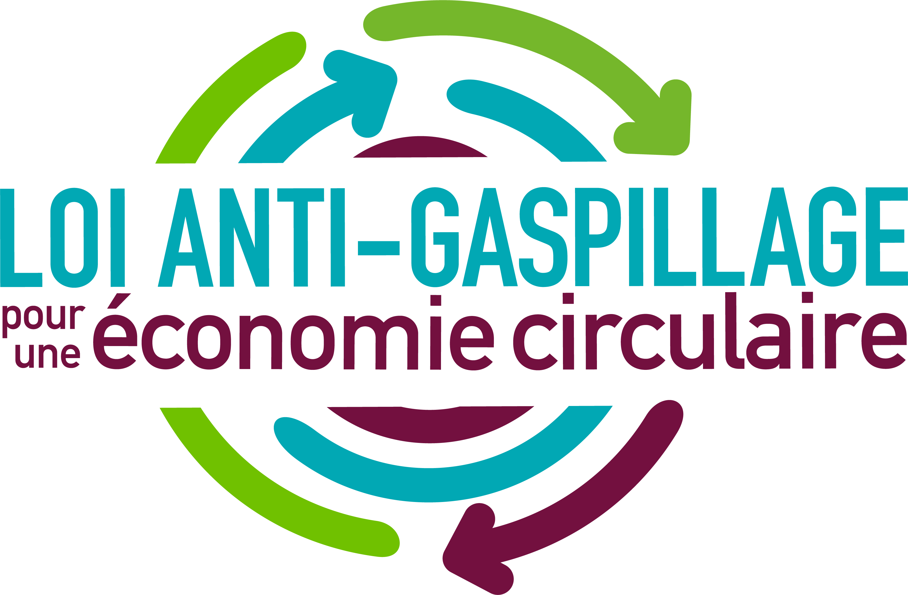
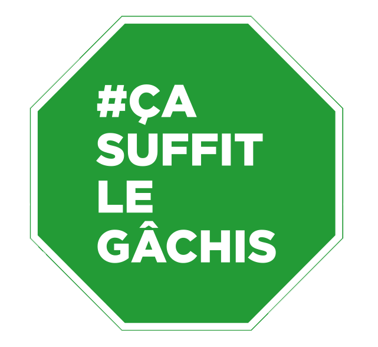

Restauration

CONTEXTE & ENJEUX
La FAO estime que le gaspillage et les pertes alimentaires représentent :
- 1,6 milliard de tonnes d'équivalents produits de base dont 1,3 milliard de tonnes pour la partie comestible.
- 28% des superficies agricoles du monde servent annuellement à produire de la nourriture perdue ou gaspillée.
La réduction du gaspillage alimentaire est un enjeu mondial : les Nations Unies, l’Union Européenne et la France se sont engagées à diminuer de moitié le gaspillage alimentaire d’ici 2030.
Cet objectif est progressivement implémenté dans la législation française. La loi AGEC, est en train de fixer un cadre pour atteindre ces objectifs :
- -50% de gaspillage alimentaire
- 2025 restauration collective
- 2030 restauration commerciale.
- Hiérarchie prévention gaspillage alimentaire
- Diagnostic préalable gaspillage alimentaire obligatoire :
- Octobre 2020 pour la restauration collective
- 2021 pour les opérateurs agroalimentaires.
- Généralisation du tri à la source des biodéchets : Janvier 2023 si gisement de plus de 5T de biodéchets annuel et pour tous au 31/12/2023.

Plan d'action Anti-Gaspi
Le gaspillage alimentaire qui représente une perte sèche pour votre établissement n'est pas une fatalité, travaillons ensemble sur cette problématique !
Plan d'action Anti-Gaspi :
- Mise en place d'une équipe projet : Le Gâchis ça suffit !
- Diagnostic initial : campagne de pesées, chiffrage du coût du gaspillage alimentaire dans votre établissement.
- Accompagnement du groupe de travail : mise en place d’indicateurs, proposition d'axes d'améliorations et recherche de solutions/partenaires adaptés à votre établissement.
- Diagnostic de suivi : valider la pertinence des actions entreprises, chiffer les économies réalisées & accompagnement pour la mise en place d’une méthodologie d’amélioration continue.
Le retour sur investissement de la prestation est garanti, car mes honoraires pour cette mission de sensibilisation au gaspillage alimentaire sont fixés au prorata des économies réalisées.